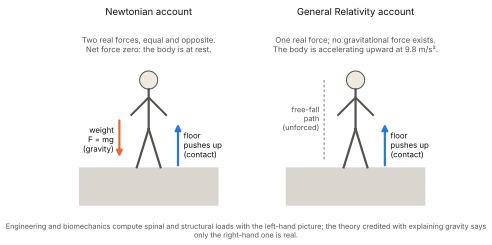
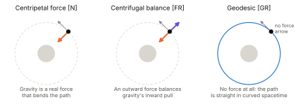
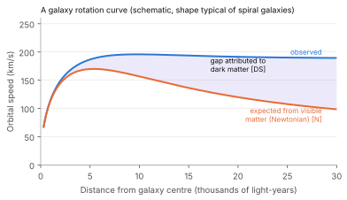
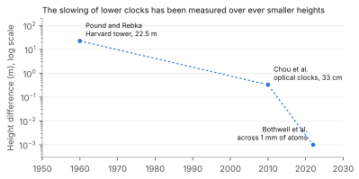
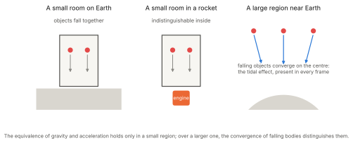
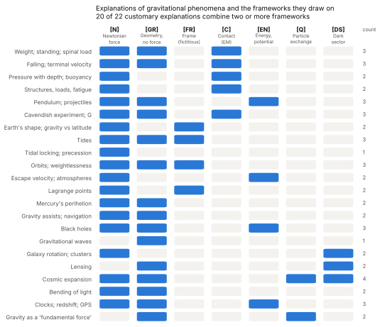
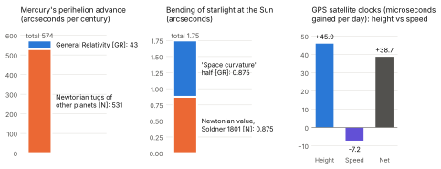

Library › The Unified Framework for the Graviton Pressure Theory
The Gravity Catalog
What Gravity Does, How It Is Explained, and Why the Explanations Do Not Agree
Watch the Deep Dive on this part
A Note on This Edition
The first edition of this catalog had one purpose: to record everything gravity does, before any theory was allowed to speak, so that every theory could be judged against the same full record.
That purpose remains. This edition adds a second.
In the work that followed the first edition, a pattern became impossible to ignore. Each phenomenon in this catalog comes with an explanation—but not from a single theory. Some are explained by Newton’s force. Some by Einstein’s curved spacetime. Some by forces that both theories call fictitious. Some by the language of energy and potential wells, some by particle exchange, and some by matter no one has detected. Often a single explanation uses several of these at once, switching between them mid-sentence. And the switches are rarely marked.
These theories do not merely differ in emphasis. On the most basic question—is gravity a force?—they give opposite answers. Yet the explanations built from them are presented as one coherent account, and their agreement on the numbers is offered as proof that nothing is wrong.
This edition therefore records, beside each phenomenon, how it is explained, and marks which theory each part of the explanation borrows from. It introduces in full the error this framework calls the Reduction Conflation, developed in detail in its own paper.1 And it applies one test throughout: does the explanation name what acts—what touches what, and what is exchanged—or does it only describe?
The physical claims of Graviton Pressure Theory are not argued here. Where this paper refers to them, the status labels used throughout the second edition apply: [Established], [Argued], [Hypothesis], [Open].
The Veil of the Obvious
This document begins with an inventory—not of theories, but of lived reality. Gravity is not introduced through models or frameworks, but through its presence: what it does, how it manifests, and where it exerts its influence.
Gravity is not hidden. It is not elusive. It is not a mystery tucked into a black hole or reserved for the instruments of high-energy laboratories. It is beneath your feet, above your head, and within your chest. It acts constantly, visibly, relentlessly. And yet, in its familiarity, it has disappeared from our attention.
We speak of “weight” as if it were a number. We reference “mass” as if it were a fixed trait. We define “force” as an equation.
But these are representations. The thing itself—the experience of gravity—is felt. It is the press of the body against the floor. It is the resistance of the legs in standing. It is the effort of the breath in lifting the chest.
Gravity is the most measured and the least questioned.
Living Under Gravity
The human body does not simply exist within gravity. It is shaped by it. From the curvature of the spine to the composition of bone, our forms are an accommodation of continuous vertical load.
Children crawl before they walk. Muscle must develop not for motion alone, but for resistance. To stand is to oppose collapse. Even in sleep, the body rests not in suspension, but in support distributed horizontally.
Fatigue accumulates not just from movement, but from stillness. To sit upright is to engage structure against compression.
The elderly often fall not because they are moving, but because they can no longer resist.
Signs in Structure
Architecture knows gravity. Every beam, arch and foundation is a negotiation with load. Load-bearing is not metaphorical. It is literal. Engineers speak of stress points and tolerance because gravity is not passive—it is persistent.
A building does not rest. It holds. A bridge does not float. It strains. A column is not idle. It compresses, constantly.
Celestial Scale, Familiar Pattern
We see the same pattern beyond ourselves. Tides rise and fall. Moons lock into resonance. Planets circle in long-lasting balance.
And yet, in each of these, we speak in borrowed words. Pull. Curvature. Attraction. Centrifugal force. Potential well. These words describe trajectories and quantities. They do not name what presses, what is compressed, or what resists. And, as this catalog will show, they are drawn from theories that contradict one another.
A Field We Endure, Not Explain
Before we debate models, we must reclaim the raw reality of what gravity does.
Every step is against it. Every structure answers it. Every moment of standing, sitting, breathing and sleeping is shaped by its unrelenting presence.
This is the catalog of what is seen. It is not yet theory. It is not yet cause.
It is what presses. It is what resists. It is what remains.
Observation Before Explanation
Reclaiming the Raw Record
This catalog is not a theory, a model or a metaphor. It is an observation log: a record of the phenomena attributed to gravity, from the press of weight in your feet to the arc of comets around a star. Before we ask how gravity works, we must first confront what it does—unfiltered, as it meets us in the world.
Too often, gravity’s reach is trimmed to fit mathematical moulds, its everyday presence set aside as “engineering” or “biology” because the theory of the day has nothing to say about it. Here we begin elsewhere: with the undeniable reality of experience and measurement.
The Primacy of What We Know
You know gravity without a textbook. You feel objects fall, sense the effort of standing upright, notice relief when lying flat after a long day. You see the tide rise with the Moon and watch a thrown ball curve back to Earth. These are not theoretical premises. They are lived and measured facts—etched into muscle, bone and breath, recorded in rivers and stars. By documenting everything gravity appears to touch, we reclaim the ground of direct experience.
Setting the Stage for a Fair Test
Before we argue over mechanisms—before gravity is cast as force, curvature or pressure—we must map its full scope. This inventory lays out the phenomena any theory must face. It prepares a stage for fair evaluation: let Newtonian mechanics, General Relativity and Graviton Pressure Theory each step forward and account for these effects. If a theory cannot explain the catalog, it is not complete—however accurate its predictions where it does speak.
The minimum obligations that follow from this record are distilled, item by item, in the companion document The Gravity Constraint Set, and General Relativity is audited against them in The GR Silence Map.2
A Second Ledger: The Explanations We Are Given
This edition keeps a second ledger beside the first. For many entries, it records the explanation that is customarily given—in textbooks, in engineering practice, in scientific communication—and marks which theory each part of that explanation is drawn from.
The purpose is not to ridicule any explanation. Most of them work: they produce the right numbers. The purpose is to make visible something the numbers hide. Read one at a time, each explanation seems sound. Read together, they assert incompatible things about what gravity is.
Description, Mechanism and the Six Registers of Gravitational Explanation
Description Is Not Mechanism
To describe a phenomenon is to state how it behaves: what follows what, by how much, under which conditions. To give its mechanism is to name what acts: the physical interface—what touches what, and what is exchanged.
Both are valuable, and a description that predicts is a great achievement. The error is not description. The error is presenting a description as though it were the mechanism, and then treating the question of mechanism as closed. Part 2 traces how this habit formed historically.3
The interface test. Does the explanation name the physical interface—what touches what, and what is exchanged—or does it only describe the action? Where it only describes, the gap is marked as a gap. A name is not a mechanism.
Six Registers, and a Seventh Addition
The explanations given for gravitational phenomena draw on six distinct conceptual frameworks—six registers—plus one category of addition. Each makes its own claim about what gravity is. In the entries that follow, each part of an explanation is tagged with its register.
| Tag | Register | What it says gravity is | What acts? |
|---|---|---|---|
| [N] | Newtonian mechanics4 | A real force between masses, acting at a distance, pointing toward the source. | Unnamed. Newton declined to say. |
| [GR] | General Relativity5 | Not a force. The geometry of spacetime; freely falling bodies are unforced and follow geodesics. | Unnamed. Geometry is described, not a carrier. |
| [FR] | Frame (“fictitious”) forces | Centrifugal and Coriolis forces that appear when motion is described from a rotating viewpoint. Both N and GR call them fictitious. | Nothing. By definition, no physical agent. |
| [C] | Contact (electromagnetic) forces | The normal force of the floor, the tension of a rope, the stress in a beam. In GR, the only real forces on a body at rest on Earth. | Electromagnetic repulsion between atoms. |
| [EN] | Energy and potential | Gravity as a potential well; bodies “fall into” it, light “climbs out” and loses energy. | An energy bookkeeping; no carrier named. |
| [Q] | Quantum field theory | One of the “four fundamental forces”, carried by a hypothetical spin-2 particle, the graviton.6 | A carrier is named—but not detected, and not part of GR. |
| [DS] | The dark sector (an addition) | Unseen matter and energy, added where the other registers’ predictions and observation disagree. | Whatever gravitates; its nature unknown. |
Three facts about this table matter for everything that follows.
First, the registers contradict one another on the most basic question. In [N] and [Q], gravity is a force. In [GR], gravity is not a force at all, and the force we feel when standing is the floor pushing up [C]. In [FR], the forces used are declared to be unreal by both of the main theories. These are not different levels of detail. They are opposite claims about what exists. [Established]
Second, almost none of the registers names what acts. [N] and [GR] describe; [FR] is a bookkeeping device; [EN] is an accounting; [Q] names a carrier that has not been detected and that General Relativity does not contain. Only [C] names a physical interface—and [C] is not gravity. [Argued]
Third, the explanations we are actually given routinely combine several registers in one account, without marking the change. That is the subject of the next section.
The Reduction Conflation
The Sentence That Licenses the Switch
There is a sentence that appears, in some form, in nearly every exposition of gravitational physics: in the limit of low velocities and weak fields, General Relativity reduces to Newtonian mechanics.
As a statement about numbers, it is true. [Established] In that limit, the equations of General Relativity yield Newtonian trajectories to high accuracy.
But that sentence is then used to license something it does not establish: switching freely between the two theories inside a single causal explanation. Gravity is described as geometry when sophistication is wanted, and as a downward force when a load, a stress or a strain must be accounted for. When the switch is questioned, the reduction is cited as the reason no contradiction exists.
The Error Defined
The Reduction Conflation is the error of treating numerical agreement between two theories as if it were agreement about what physically exists.7
That two theories produce the same number within a limited domain does not mean they make compatible claims about reality. A lookup table, a fitted curve and a physical field theory may all give the same answer while disagreeing completely about what causes it. In the philosophy of science, a theory reduces to another when the second’s laws can be derived from the first under stated conditions;8 matching outputs alone is a weaker relation, and it does not carry the first theory’s account of what exists into the second. [Argued]
On gravity, the two theories’ commitments cannot both be true:
Newtonian commitment: gravitational force is real. It acts on mass, transfers momentum, and loads structures.
Relativistic commitment: gravitational force does not exist. It is an artifact of describing motion from a non-inertial viewpoint. A body at rest on the ground is being pushed upward by the ground, away from its natural free-fall path.
A real force does not become a non-existent one because something moves slowly. The mathematical limit maps trajectories; it says nothing about what exists. [Argued]
How the Contradiction Is Concealed
The conflation survives because the numbers agree. An accelerometer reads \(9.81\,\mathrm{m/s^2}\) whether that number is read as Newton’s gravitational field or as General Relativity’s upward proper acceleration. Because the measurement cannot tell them apart, the interpretation is treated as unimportant. The quantitative match makes the qualitative contradiction invisible.
The concealment works in four steps:
Establish the limit. Show that GR yields Newtonian numbers at low speeds and weak fields. (True.)
Infer interchangeability. Conclude that the two theories’ pictures of reality are therefore compatible. (Unlicensed.)
Switch mid-explanation. Use geometry when theory is discussed, force when load is calculated.
Shield the switch. When challenged, cite step 1.
When Mixing Is Legitimate
Using two theories in one piece of work is not, by itself, an error. Engineers and astronomers do it every day, and they are right to use whatever calculates correctly. The error arises in explanation, when a mixed account is presented as one coherent story of what is physically happening.
Mixing is legitimate when it meets three conditions:9
The transitions are marked. The explanation says where it moves from one register to another.
The contradiction is bracketed. It says plainly that the registers disagree about what exists, and that the calculation is used for its numbers, not its picture.
The mechanism is left open. It does not present the combined account as having answered what acts.
It is sometimes said that these tensions are “already acknowledged” by physicists. Acknowledgment is not resolution. An unresolved contradiction that is acknowledged in specialist literature, and then left unmarked in every textbook explanation, has not been resolved. It has been filed away. [Argued]
The Strongest Reply, and an Answer
A careful physicist will answer this section, and the answer deserves to be stated in its strongest form.
The reply. “There is no contradiction. In General Relativity, Newton’s force of gravity is a fictitious force—exactly like the centrifugal force felt in a turning car. It appears when motion is described from a frame fixed to the ground instead of from free fall. In the weak-field limit, the theory’s connection coefficients for such a frame reproduce the Newtonian term, \(-m\nabla\Phi\), precisely. Engineers who use \(F = mg\) are not borrowing from a rival theory; they are using General Relativity in a convenient frame, where a frame-dependent force term is perfectly legitimate. The reduction is a genuine derivation, not a coincidence of numbers.”
Much of this is correct, and it should be granted. It is the right account of how General Relativity treats the Newtonian term, and the weak-field limit is a genuine derivation of that term and of the trajectories that follow from it. [Established]
But the reply does not close the question. It moves it.
The load is still real. If the downward force is fictitious, then the compression of every column, every spine and every foundation is being started by something the theory says is not there. In General Relativity, the real force is the ground pushing upward [C], and each part of a column, “trying” to follow its free-fall path, is held up by the part beneath it. That is a description of the stress pattern. It does not say what makes every resting particle of matter tend toward the Earth’s centre in the first place—what acts on it, and what is exchanged. The work once done by a force is now attributed to inertia relative to a geometry, and the geometry exchanges no momentum locally and has no energy that can be located at a point.10 The gap has been renamed, not filled. [Argued]
The analogy holds only locally. Centrifugal force can be removed everywhere at once by describing motion from a non-rotating frame. Gravity cannot: it can be removed only in a small region, because the tidal part—the convergence of falling bodies toward a centre—remains in every frame. [Established] Gravity is therefore not simply a fictitious force like the centrifugal one. Something frame-independent is present, and the reply does not say what acts in it.
The reply is almost never given. Where explanations do state it—that the force of gravity is frame-dependent, used for its numbers, and that what physically acts is not thereby explained—they meet the conditions for legitimate mixing set out above. The Reduction Conflation is not a claim that physicists cannot answer this question. It is the observation that the explanations we are actually taught do not: they say “gravity pulls”, then “gravity is not a force”, and leave the reader to believe both. [Argued]
The reply, in other words, is the bracketing that the explanations lack. Stated openly, it supports the argument of this catalog: our numbers are secure, our pictures of what gravity is are not reconciled, and the question of what acts remains open. [Open]
What This Catalog Will Show
General Relativity is a description, and lacking a mechanism is no flaw in it as a description. It predicts superbly. [Established] The problem arises only when someone oversteps—when the combination of GR, Newtonian force, frame forces and energy language is presented as a complete account of what gravity is and how it acts.
The entries that follow show how often that overstep occurs, and how much of our everyday understanding of gravity depends on it.
Human-Scale Gravitational Experience
The Embodied Presence of Gravity
This section records the immediate, physical and perceptual ways gravity shapes the human body and daily life—phenomena so woven into existence that they slip beneath notice, yet so persistent they define how we live, move and sense the world. They are continuous, embodied experiences, and any theory of gravity must confront them as primary data, not background noise.
Weight and Pressure
A constant downward load is felt as weight. Limbs hang heavy, organs rest on those below them, and soft tissue sags—a continuous load carried throughout life.
Standing loads bones, joints and discs. Over a day, the spine compresses measurably: most people are about a centimetre shorter in the evening than in the morning. Astronauts in orbit grow by several centimetres, and return to their normal height on Earth.
Lying down, or floating in water, brings relief: the load is redistributed or supported by the surrounding fluid.
Why does lying down feel so good? Because the load is spread across the whole body instead of carried through the spine and legs.
Explained as: In everyday and medical practice, weight is a downward force \(F = mg\) [N]. In General Relativity, there is no downward force: the body would follow its free-fall path, and the floor pushes it upward, away from that path [GR], [C]. Biomechanics then computes spinal compression from the weight of the body segments above each disc—a downward load [N].

Balance and Orientation
Upright posture is a dynamic balance, maintained by constant small corrections from the inner ear, the eyes, the joints and the muscles.
The inner ear contains otoliths—tiny crystals resting on sensory hair cells—which register the direction of “down” by the way they bear on those cells.
Inversion—head below feet—raises pressure in the head and disorients, revealing how deeply physiology is built around one direction.
The fear of falling is deeply rooted, an inborn recognition that loss of balance has consequences.
Why does being upside down feel so strange? Because the whole body—fluids, sense organs, posture—is built around one direction.
Explained as: The otoliths are said to sense “the gravitational force” or “gravito-inertial acceleration”. The first is [N]; the second combines gravity with acceleration as the equivalence principle allows [GR]. The bearing of crystal on hair cell is a contact interaction [C]. What acts on the crystal to make it bear down is not named.
Effort and Resistance
Lifting, climbing and walking uphill demand additional energy.
Starting and stopping in vehicles and lifts changes the load we feel; the body responds immediately.
Even standing still demands effort. Muscles must remain engaged to prevent collapse, and resisting gravity is a continuous, energy-consuming process.
Why does just standing still make you tired? Because the body is working constantly to hold itself up, even when nothing moves.
Explained as: The energy cost of climbing is computed as work against gravity, \(mgh\) [N], [EN]. Standing still does no mechanical work in physics’ definition; the metabolic cost is attributed to the muscles’ internal processes. In GR, the standing body is being continuously accelerated upward by the floor [GR], [C]—yet no part of the account says what the body is being held against.
Falling and Jumping
Free fall produces a distinct response: the usual cues of support vanish, producing lightness and disorientation.
The “stomach drop” is felt as the internal organs, no longer supported in the usual way, shift and the sense organs lose their usual load.
Falling has a limit in air. Speed rises until air resistance matches weight, and then stays constant: terminal velocity.
Why does falling feel different from any other movement? Because it is the one time nothing is holding us up.
Explained as: In Newtonian terms, a falling body is accelerated by the force of gravity [N]. In GR, a falling body is unforced—it is the one state in which no force acts—and the body standing on the ground is the accelerated one [GR]. Terminal velocity is then computed as a balance between air drag and the force of gravity, \(mg\) [N], [C]. One phenomenon, explained in successive steps by theories that disagree about whether the falling body is forced at all.
Biological Shaping
Bone density responds to load. Long stays in orbit cause bone and muscle loss.
The cardiovascular system is built for a vertical gradient: valves in the leg veins prevent pooling, and standing up too quickly can cause dizziness or fainting as blood drains toward the feet.
Skeletal proportions, joint angles and gait reflect a lifetime under load.
Plants sense direction too: roots grow down and shoots grow up, guided by dense starch grains (statoliths) that settle within specialised cells.
Why does space weaken the body? Because it takes away the load our bones and blood were built to work against.
Pendulum Motion and Swinging
A pendulum swings back and forth around its lowest point. Its period depends on its length and on local gravity, not on its mass—the basis of pendulum clocks and of early measurements of gravity’s variation over the Earth.
Why does a swing always return to centre? Because something always restores it toward the lowest point.
Explained as: The period \(T = 2\pi\sqrt{L/g}\) is derived with a downward gravitational force [N], or equivalently by exchanging potential and kinetic energy [EN]. In GR, the bob would follow a geodesic; it is the string’s tension that forces it from that path [GR], [C].
Breathing and Posture
Breathing mechanics change with posture. Upright, the abdominal organs hang away from the diaphragm and resting lung volume is larger. Lying flat, the abdominal contents press against the diaphragm and resting lung volume falls. Blood and air are also distributed unevenly from the top of the lungs to the bottom.
Why does breathing change when we lie down? Because the weight of the organs shifts against the diaphragm.
Hair and Clothing Drape
Hair, cloth and loose objects hang vertically, and shift with posture.
Why do they fall the way they do? Because, whatever we call it, something always directs them down.
A Baseline for Embodiment
These effects define the physical context in which we live. They are not incidental; they are foundational. Any theory of gravity must account for them—not as biology or engineering to be handed elsewhere, but as gravity itself, encountered.
Environmental Interactions
Gravity’s Silent Ordering
Gravity manifests constantly in the behaviour of our surroundings, guiding the placement and movement of materials in predictable ways—patterns so embedded in daily life that we notice them only when they are disrupted.
Settling, Layering and Sorting
Dust and soot slowly descend and collect on horizontal surfaces.
Fluids layer by density: oil floats on water; silt settles beneath clear water; sand and gravel sort into bands.
The oceans are layered by temperature and salt, and that layering drives a slow, planet-wide circulation.
Why does dust linger, only to fall? Because air resists only for a while; what rises or floats eventually settles.
Pressure with Depth and Height
Water pressure rises steadily with depth: about one atmosphere for every ten metres.
Air pressure and density fall with altitude; at the summit of Everest, air pressure is about a third of that at sea level.
Explained as: Hydrostatic pressure is computed as \(P = \rho g h\): each layer supports the weight of the layers above [N]. In GR, there is no weight to support; each layer is pushed upward by the layer beneath it, ultimately by the ground [GR], [C]. The ocean does not choose between these accounts. The textbook uses the first.
Buoyancy, Bubbles and Rising Flames
Bubbles rise in liquids; foam collects at the top; helium balloons ascend; carbon dioxide pools in low places.
On Earth, flames point upward. In orbit, flames become spherical and burn more slowly, because hot gases no longer rise away from them.
Warm air rises and cool air sinks, driving convection, weather and the circulation of the atmosphere.
Why do flames stretch upward? Because the cooler, denser air around them settles beneath the hot gas and lifts it.
Explained as: Buoyancy is explained by Archimedes’ principle: the surrounding fluid’s pressure, greater below than above, exceeds the object’s weight [N], [C]. The pressure difference arises because deeper fluid supports more weight [N]. Without a downward force on the fluid, there is no pressure gradient to lift anything—yet in GR there is no downward force.
Water Flowing Downhill
Water moves from high to low ground, carving riverbeds, spreading floodplains and filling basins. Waterfalls, rain and rivers all follow the same direction.
Plumbing, drainage, aqueducts, siphons, water towers and hydroelectric dams all rely on this flow.
What drives the stream? A constant downhill preference, which we harness without knowing its cause.
Shapes of Liquids
Small drops are nearly spherical; large drops and puddles flatten. In narrow tubes, water climbs against gravity by capillary action, to a height set by the balance between surface tension and weight.
Landslides and Avalanches
Earth, snow and rock slide downhill when their friction and cohesion are exceeded. Slopes settle to characteristic angles of repose.
What triggers the fall? The moment material strength is exceeded, the downward load acts without delay.
Projectiles
A thrown ball, a jet of water or a cannon shell follows a curved path—very nearly a parabola—and all objects launched alike follow the same path, regardless of their mass.
Explained as: The parabola is computed with a constant downward acceleration \(g\) from a downward force [N]. In GR, the projectile is unforced and follows a geodesic in curved spacetime; the parabola is how that geodesic looks in Earth’s coordinates [GR].
A Natural Order
These interactions—so routine they fade into the background—reveal the ceaseless work of gravity. Dust settles, rivers carve, flames rise, oceans layer—not as random acts, but as predictable consequences of one ever-present influence. And nearly every quantitative account of them is written in the Newtonian register, with a downward force that General Relativity says does not exist.
The Built World and the Measurement of Gravity
Gravity’s Hand on Human Craft
Gravity governs the design, construction and stability of every human-made structure—from the humblest tool to the tallest tower.
Support Structures and Foundations
Every building must carry its own weight down to the ground through foundations, walls and columns.
The taller the structure, the greater the load at its base, and the more its stability matters.
Roofs sag, cables droop, shelves bow and materials creep and fatigue under constant load over time.
Why do things bend? Because the load never rests.
Explained as: Structural engineering is wholly Newtonian: a downward body force on every element, load paths to the ground, stress and strain computed from them [N], [C]. General Relativity is not used, and contains no native downward body force to start the stress in a static structure. A physics course teaches that gravity is not a force; the engineering course next door designs every building around one. The transition is rarely mentioned.11 [Argued]
Bridges, Lifts, Cranes and Aircraft
Bridges carry their own weight and moving loads. Lifts and cranes use motors and counterweights. Aircraft must generate lift to balance their weight.
Verticality, Plumb Lines and Levels
Builders use plumb lines to find vertical and spirit levels to find horizontal. “Down” is the most reliable reference in all of construction.
How do we measure true? By trusting the direction that never wavers.
Weighing
A balance compares two masses directly; it gives the same reading anywhere. A spring scale measures the load an object places on it; its reading changes slightly with location, and falls to zero in free fall.
Measuring Gravity Itself
Universality of free fall. All bodies fall at the same rate regardless of mass or composition. Galileo described it; the MICROSCOPE satellite has confirmed it to about one part in \(10^{15}\).12 [Established]
Attraction between ordinary objects. In 1798 Henry Cavendish measured the tiny attraction between lead spheres in a laboratory, using a torsion balance.13 The gravitational constant \(G\) is still the least precisely known of the fundamental constants.
Mapping the field. Gravimeters detect local variations caused by rock density, ore bodies and caverns; satellites map changes in Earth’s gravity from season to season, as ice melts and groundwater moves.
Explained as: Cavendish’s result is computed as Newton’s force between two masses [N]. In GR, there is no force between the spheres; each moves on a geodesic of a spacetime curved by the other [GR]—except that the spheres are held by a fibre, whose twist is a contact force [C]. The constant \(G\) appears in both theories, measured in an experiment interpreted with one of them.
Planetary and Local Celestial Phenomena
Gravity’s Reach Beyond the Ground
This section records gravitational effects that govern the Earth and its immediate neighbourhood—large in scale, yet fully observable.
Shape, Layering and Mountains
Large bodies are round. Above a few hundred kilometres across, a body’s own weight shapes it into a near-sphere. Smaller asteroids can be irregular.
Planets are layered: dense iron at the centre, lighter rock above, water and air on top.
Mountains have a maximum height, and continents float on the denser mantle beneath them in a balance called isostasy; land rebounds slowly when ice sheets melt.
The Earth bulges at the equator: its equatorial radius is about 21 km larger than its polar radius.
Explained as: The bulge is explained by “centrifugal force” from Earth’s rotation [FR] acting against gravity’s inward pull [N]. Both N and GR declare centrifugal force fictitious. In GR, there is neither an inward pull nor an outward force—only geodesics and the contact forces of rock on rock [GR], [C]. The shape of the planet is computed with two forces, one of which both theories say is unreal, and the other of which the more fundamental theory says does not exist.
Gravity Varies over the Earth
Gravity is weaker at the equator (about \(9.78\,\mathrm{m/s^2}\)) than at the poles (about \(9.83\,\mathrm{m/s^2}\)), weaker on mountaintops, and varies with the rock beneath.
Explained as: Part of the equatorial difference is attributed to distance from Earth’s centre (the bulge) [N], and part to centrifugal effect [FR].
Tides
The oceans rise and fall twice a day, with bulges both toward and away from the Moon. The Sun adds a smaller tide; spring and neap tides follow the Moon’s phases.
The solid Earth also rises and falls—by up to about 30 centimetres—and the atmosphere has small lunar tides.
Tidal friction is slowing Earth’s rotation, lengthening the day, and the Moon is receding from Earth by about 3.8 centimetres a year, measured by laser ranging to reflectors left on the Moon.14
Jupiter’s moon Io is heated by tides strongly enough to be the most volcanic body known.
Why do tides rise? Because the Earth is flexible, and the influence that moves the oceans does not stop at the water’s edge.
Explained as: Tides are taught as the difference in the Moon’s pull across the Earth [N]. In GR, they are geodesic deviation—the tidal part of curvature, the one feature of gravity that cannot be removed by changing viewpoint [GR]. Popular explanations often add a centrifugal force to account for the far-side bulge [FR]. Tidal prediction itself is done with Newtonian forces and harmonic analysis [N]. The slowing of Earth’s spin is then explained as a torque on the tidal bulge [N]—a force-based concept with no counterpart in the GR account just given.
Orbits and Weightlessness
The Moon circles the Earth; the Earth circles the Sun on a slightly elliptical path; satellites circle the Earth at speeds set by their height.
Astronauts in orbit float, although Earth’s gravity at the height of the International Space Station is about 90% of its strength at the surface.
What keeps them circling? A balance that needs no engine once it is reached.
Explained as: Three incompatible explanations are in common use, sometimes in the same paragraph. (1) Gravity provides the centripetal force that bends the path [N]. (2) Gravity’s inward pull is balanced by an outward centrifugal force [FR]—which is why astronauts are said to feel nothing. (3) The orbiting body is unforced, following a geodesic; there is no gravitational force to balance [GR]. Weightlessness is then explained as “continuous free fall”—a phrase that means falling under a force in [N] and unforced motion in [GR].

Precession and Wobble
Earth’s axis traces a slow circle in space over about 26,000 years: the precession of the equinoxes. Nutation adds a smaller nod with an 18.6-year period, following the Moon’s orbital cycle.
The Chandler wobble, a small wobble of the axis with a period of about 14 months, is a free oscillation of the non-rigid Earth, kept going mainly by changes in ocean-bottom and atmospheric pressure.15
Explained as: Precession is explained as the torque of the Sun and Moon on Earth’s equatorial bulge [N].
Atmospheric Retention and Escape
Earth holds an atmosphere; the Moon and Mercury hold almost none. Light gases such as hydrogen and helium slowly escape even from Earth.
To leave a body entirely requires a minimum speed—the escape velocity, about 11.2 km/s at Earth’s surface.
Explained as: Escape velocity is computed from the depth of the gravitational potential well [EN], using Newton’s potential [N].
Lagrange Points
In a system like the Sun and Earth, there are five positions where a small body can keep pace with the larger two. Three of them (L1, L2, L3) are unstable: a body there drifts away unless it corrects its position. Two (L4, L5) are stable, and collect natural objects.
The James Webb Space Telescope circles the Sun–Earth L2 point, about 1.5 million km from Earth, in a “halo” orbit that needs regular small corrections.
Explained as: Lagrange points are found by balancing the gravitational forces of two bodies [N] against the centrifugal force [FR], in a frame rotating with them, with the Coriolis force [FR] governing stability. Relativistic corrections are negligible and almost never used.
Roche Limit
A moon or comet that comes too close to a planet is torn apart when tidal stress exceeds its own cohesion. Large moons do not form inside this distance; Saturn’s rings lie mostly within it. In 1992, Comet Shoemaker–Levy 9 was broken into pieces by Jupiter, and the fragments struck the planet in 1994.
What breaks them apart? The same influence that holds a body together, applied unevenly.
The Solar System
Gravity’s Wider Canvas
Beyond Earth’s neighbourhood, the same influence arranges an entire planetary system.
Planetary Arrangement and Kepler’s Laws
The planets move on ellipses with the Sun at one focus, sweep out equal areas in equal times, and have periods related to their distances by a fixed rule—Kepler’s three laws, found from observation before any theory explained them.
The planets orbit in nearly the same plane and the same direction.
The system has been stable for billions of years, yet over tens of millions of years its exact motions are chaotic and cannot be predicted in detail.16
Orbital resonances are common: Neptune and Pluto orbit in a 3:2 ratio that prevents them from colliding; three of Jupiter’s large moons are locked in a 1:2:4 rhythm.
Why this order? Because mass and motion settle into long-lasting arrangements—though not perfectly predictable ones.
Mercury’s Perihelion
The point of Mercury’s closest approach to the Sun advances slowly, by about 574 arcseconds per century relative to the stars.
Explained as: About 531 arcseconds of this are computed as the Newtonian tugs of the other planets [N]; the remaining 43 are attributed to General Relativity [GR].17 The agreement is celebrated as a triumph of GR—and it is a numerical triumph. But the total is a sum: most of it from a theory in which planets pull one another with real forces, and a small remainder from a theory in which there are no such forces. The causal picture of the first part is denied by the theory credited with the second. [Argued]
Asteroid Belt, Gaps and Trojans
The asteroid belt lies between Mars and Jupiter. Its Kirkwood gaps lie where an asteroid’s period would be a simple fraction of Jupiter’s.
Trojan asteroids gather around Jupiter’s L4 and L5 points, sixty degrees ahead of and behind the planet.
Comets, Rings and Moons
Comets follow long ellipses, returning from the outer solar system on schedules of decades to millions of years.
Saturn’s rings are sharply structured, with gaps and edges maintained by resonances with its moons and by small “shepherd” moons.
The Moon is tidally locked, always showing Earth the same face; so are most large moons in the solar system.
Explained as: Ring structure is computed with Newtonian resonances [N]; tidal locking with a Newtonian torque on a tidal bulge [N].
Gravity Assists
Spacecraft gain or lose speed relative to the Sun by passing close to a planet. Relative to the planet, the spacecraft leaves as fast as it arrived; relative to the Sun, it has taken a little of the planet’s orbital energy.
Explained as: Trajectories are planned with Newtonian “patched conics” and numerical integration [N], [EN]. Precision navigation then integrates Newtonian many-body equations with small relativistic correction terms added [N], [GR].
Light, Radar and Spinning Gyroscopes near the Sun and Earth
Radar signals passing near the Sun are delayed: the Shapiro delay, measured most precisely by the Cassini spacecraft in 2002.18
Gyroscopes in orbit around the Earth slowly change the direction they point, by the amounts predicted for the geodetic effect and for the dragging of space by Earth’s rotation, measured by Gravity Probe B.19
Explained as: These effects are explained only in [GR]. They are among its strongest confirmations. [Established]
Unexplained Motions
The Pioneer spacecraft showed a tiny unexplained deceleration for decades. It is now attributed to the uneven radiation of the spacecraft’s own heat.20
Several spacecraft flying past Earth have shown small unexplained changes in speed—the flyby anomaly—which remain unresolved.21 [Open]
Stars, Galaxies and the Cosmos
Stars and Their Remnants
Stars form when clouds of gas and dust collapse under their own weight, and live for billions of years in balance between that weight and the outward pressure of their hot interiors.
Stars that exhaust their fuel collapse into white dwarfs, neutron stars or black holes.
Many stars orbit in pairs or groups around a shared centre.
Explained as: Stellar structure is computed with hydrostatic balance—pressure supporting weight [N], [C]—with relativistic corrections for neutron stars [GR].
Black Holes
Stars orbit an unseen compact object of about four million solar masses at the centre of our galaxy. Images of the glowing gas around the black holes in the galaxy M87 and in our own galaxy were published in 2019 and 2022.22
Matter falling toward such objects forms hot discs and powerful jets.
Explained as: The black hole is a solution of GR [GR]. It is often introduced, however, as a body whose escape velocity exceeds the speed of light [EN], [N]—the reasoning John Michell published in 1784.23 That Newtonian argument happens to give the same radius as GR, \(2GM/c^2\); in GR, escape velocity is not the reason light cannot leave. The coincidence of the number is used to make the relativistic object intuitive by a Newtonian argument that GR does not endorse. [Argued]
Binary Pulsars and Gravitational Waves
The orbit of the binary pulsar PSR B1913+16 is shrinking, at a rate matching the loss of energy to gravitational waves predicted by GR to within a fraction of one percent.24
Since 2015, detectors have recorded gravitational waves directly—ripples arriving from colliding black holes and neutron stars, measured as changes in the length of kilometre-long arms smaller than a proton.25
Explained as: Both are explained in [GR], with great precision. [Established] Yet the waves carry energy, and that energy moves the detectors’ mirrors. In GR, the gravitational field has no energy that can be located at a point; its energy can be defined only for a region, and only in particular coordinates.26 Curvature is real enough to carry energy across the universe and shake a mirror, but not substantial enough to have energy at any particular place. [Argued]
Galaxies
Galaxies rotate, and stars far from their centres orbit much faster than the visible matter can account for.27
Spiral arms persist for billions of years; they are commonly explained as density waves moving through the disc.
Clusters, Lensing and the Dark Sector
Galaxies in clusters move too fast to be held together by the visible matter—as Fritz Zwicky noticed in 1933.28
Light from distant galaxies is bent and multiplied by the mass of clusters in front of them: gravitational lensing. In the Bullet Cluster, the lensing mass appears offset from the hot gas that makes up most of the visible matter.29
The expansion of the universe appears to be accelerating.30
In the standard cosmological model, dark matter and dark energy together make up about 95% of the universe’s energy content.31 After decades of searching, no dark matter particle has been directly detected. [Established]
Explained as: This is where the registers are most tightly spliced. Galaxy rotation and cluster motions are almost always analysed with Newtonian gravity and Newtonian dynamics [N]—GR is not used, because the fields are weak. The shortfall is filled with dark matter [DS]. The lensing that maps the same dark matter is computed with General Relativity [GR]. Cosmic expansion is described by GR’s Friedmann equations [GR]—which can also be derived by a purely Newtonian argument, as Milne and McCrea showed in 1934, and are often taught that way [N].32 The acceleration is attributed to dark energy, often linked to the energy of the vacuum [DS], [Q]. The agreement of these different measurements on the amount of dark matter is presented as strong confirmation. But the agreement is between a quantity inferred with a force-based theory and a quantity inferred with a theory that says there is no such force. [Argued]

Light and Time
The Bending of Light
Starlight passing the edge of the Sun is deflected by about 1.75 arcseconds, as first measured during the solar eclipse of 1919.33
Explained as: In 1801, Johann von Soldner calculated with Newtonian gravity that light, treated as particles, should be deflected by about 0.87 arcseconds34 [N]. General Relativity predicts twice this. The doubling is commonly explained as two equal halves: one half from the “bending of time”, matching the Newtonian value, and the other half from the curvature of space [GR]. The explanation divides one effect between a Newtonian picture and a geometric one, and attributes each half to a different story.
Clocks and Gravitational Redshift
Clocks run faster the higher they are. This was measured over the 22.5-metre height of a tower at Harvard by Pound and Rebka in 1959–60;35 with clocks flown around the world in 1971;36 between optical clocks 33 centimetres apart in height in 2010;37 and across a single millimetre-scale cloud of atoms in 2022.38
The clocks on GPS satellites gain about 45 microseconds a day relative to the ground because they are higher, and lose about 7 because they are moving fast; the net gain of about 38 microseconds a day must be corrected for, or positions would drift by kilometres a day.39
Explained as: Two different explanations are given for the same measurement. In one, light “climbing out of a gravitational well loses energy”, like a ball thrown upward [EN]—the language of Pound and Rebka’s own title, Apparent Weight of Photons. In the other, nothing happens to the light at all; clocks at different heights simply run at different rates [GR]. Textbooks routinely give both, as equivalent. The GPS correction itself is computed from the Newtonian gravitational potential, \(\Delta f/f = \Delta\Phi/c^2\) [N], combined with the time dilation of Special Relativity for the satellites’ speed.

Anomalies, Extremes and Edge Cases
Gravity’s Unseen Edges
These are the places where gravity behaves least intuitively, and where any model must be most careful.
The Equivalence Principle and Its Limits
In a small, closed room, the effects of standing on Earth and of accelerating in a rocket cannot be told apart. Over a larger region, they can: in a gravitational field, falling objects converge toward the centre, and differences in gravity stretch extended bodies. Near a black hole, this stretching becomes destructive.
Explained as: General Relativity is built on the local equivalence [GR]. This framework argues that the inference drawn from it—that gravity therefore is acceleration, and not a force—goes further than the observation licenses.40 One example: a rocket’s acceleration requires a continuous input of force from an engine, but no such input is found for the ground, which GR says is accelerating upward at \(9.8\,\mathrm{m/s^2}\) at every point of the Earth’s surface at once—in opposite directions on opposite sides—while the Earth does not grow. [Argued]

Artificial Gravity
A rotating space station would press its occupants against its outer wall, producing an effect like weight.
Explained as: The effect is described as centrifugal force [FR], or as the wall’s contact force constantly turning the occupants’ paths [C].
Revealing Complexity
These cases—variations, time shifts, weightlessness, extremes—show that gravity is not one uniform effect but a family of behaviours that change with position, motion and surrounding mass. Each is a stress test for any explanation.
What We Were Told: From Newton to Einstein
Before we set the catalog against the theories, we must state fairly what those theories say—beginning not with Einstein, but with Newton. We do not begin with critique. We begin with the record.
Newton’s Gravity: Force Without Cause
Newton defined gravity as a force of attraction between masses, proportional to the product of the masses and inversely proportional to the square of the distance between them:41 \[F = G\,\frac{m_1 m_2}{r^2}\] where \(G\) is the gravitational constant, \(m_1\) and \(m_2\) are the masses, and \(r\) is the distance between their centres.
This law was remarkably predictive. It explained the planets, the tides and falling bodies, and it remains the working tool of engineering, navigation and most of astronomy. But Newton himself acknowledged its limit: he could not say how the force acted, and he declined to guess. For centuries, that silence was treated as a minor philosophical matter.
From Force to Curvature: General Relativity
In 1915–16, Einstein proposed that gravity is not a force at all. Mass and energy determine the geometry of spacetime, and freely falling bodies follow the straightest possible paths—geodesics—in that geometry:42 \[G_{\mu\nu} + \Lambda g_{\mu\nu} = \frac{8\pi G}{c^4}\,T_{\mu\nu}\] Here \(G_{\mu\nu}\) describes the curvature of spacetime, \(T_{\mu\nu}\) the distribution of matter and energy, \(g_{\mu\nu}\) the metric, \(\Lambda\) the cosmological constant, and \(c\) the speed of light.
GR accounted for what Newton’s law could not—the extra advance of Mercury’s perihelion, the full bending of starlight, the slowing of clocks—and has since passed every precision test put to it. [Established] Like Newton’s law, it does not name a mechanism. It describes the geometry of motion, not a physical process by which matter shapes that geometry or by which geometry sets a resting body in motion.
What Was Taught
GR became the standard theory of gravity in physics and astronomy. Newton’s law continued to be taught first, and continued to be used for nearly all practical work. Most people learn that “gravity pulls” and never encounter curvature; many who do encounter it learn both pictures without being told that they contradict one another. The public understanding of gravity remains a mixture: intuitive pull alongside an institutional theory that denies it.
The Ledger of Explanations
Phenomena and Their Registers
The table gathers the explanations recorded in this catalog. For each phenomenon, it lists the registers that the customary explanation draws on. A phenomenon explained in one register only would be unremarkable. What stands out is how few are.

| Phenomenon | Registers used | Where the switch happens |
|---|---|---|
| Weight; standing; spinal load | [N] [GR] [C] | Down-force for load; up-push in GR |
| Falling and terminal velocity | [N] [GR] [C] | Forced fall (N) vs unforced fall (GR) |
| Pressure with depth; buoyancy | [N] [C] | Weight of fluid, absent in GR |
| Structures, loads, fatigue | [N] [C] | GR silent; Newton supplies all |
| Pendulum; projectiles | [N] [EN] [GR] | Force, energy, geodesic |
| Cavendish experiment; \(G\) | [N] [GR] [C] | Force between spheres vs none |
| Earth’s shape; gravity vs latitude | [N] [FR] | Real pull vs fictitious push |
| Tides | [N] [GR] [FR] | Differential pull, curvature, centrifugal |
| Tidal locking; precession | [N] | Torque, absent from GR account |
| Orbits; weightlessness | [N] [FR] [GR] | Centripetal force, centrifugal balance, geodesic |
| Escape velocity; atmospheres | [EN] [N] | Potential well |
| Lagrange points | [N] [FR] | Rotating frame forces |
| Mercury’s perihelion | [N] [GR] | \(''\) Newtonian + 43\(''\) relativistic |
| Gravity assists; navigation | [N] [GR] | Newtonian equations + GR corrections |
| Black holes | [GR] [EN] [N] | Escape-velocity intuition for a GR object |
| Gravitational waves | [GR] | Energy carried; no local energy |
| Galaxy rotation; clusters | [N] [DS] | Newtonian dynamics + unseen mass |
| Lensing | [GR] [DS] | Same unseen mass, other theory |
| Cosmic expansion | [GR] [N] [DS] [Q] | Friedmann (GR or Newtonian) + dark energy |
| Bending of light | [N] [GR] | Newtonian half + geometric half |
| Clocks; redshift; GPS | [EN] [GR] [N] | Photon losing energy vs clock rates; Newtonian potential |
| Gravity as a “fundamental force” | [Q] [GR] | Force in particle physics; not a force in GR |
Contradictions Presented as Coherence
Four short examples show how the switching reads in practice. Each is a representative composite of explanations found in teaching materials and popular science—not a quotation from any one source—with the register of each sentence marked.
Standing. “Gravity pulls you down with a force equal to your weight, \(mg\) [N]. According to Einstein, gravity isn’t really a force; you’re being accelerated upward by the floor [GR], [C]. That’s why your spine is compressed: each vertebra carries the weight of the body above it [N]. Both descriptions are fine, because relativity reduces to Newton at everyday speeds.” [Reduction Conflation]
The space station. “Gravity is still about 90% as strong up there, and it supplies the centripetal force that keeps the station in orbit [N]. Astronauts float because they’re in free fall [N]/[GR]—in relativity, free fall is the natural, unforced state [GR]. You could also say the centrifugal force balances gravity [FR].”
Light and clocks. “Light climbing out of Earth’s gravity loses energy, like a ball thrown upward, so its frequency drops [EN]. Equivalently, clocks higher up simply tick faster [GR]. GPS engineers correct for this using the gravitational potential, \(\Delta\Phi/c^2\) [N].”
Dark matter. “Stars in the outskirts of galaxies orbit too fast for the gravity of the visible matter to hold them [N], so there must be unseen mass [DS]. Gravitational lensing, predicted by Einstein, confirms it [GR]: the two methods agree on how much dark matter there is.”
In each case, the explanation reads smoothly. It also asserts, within a few sentences, that gravity is a force and that it is not; or that a force both theories call fictitious does real work; or that a single measurement means two different physical things. The numbers are right throughout. The picture of what is happening is not one picture. [Argued]
What the Numbers Borrow
The larger point is not that any one explanation is careless. It is that the mathematics and the explanations of gravity, taken together, borrow from contradictory theories to justify their numbers and methods:
The numbers of everyday life, engineering and most astronomy come from Newton’s force.
The authority comes from General Relativity, which says that force does not exist.
The shapes and stabilities of rotating systems come from frame forces that both theories call unreal.
The intuitions—wells, climbing, escaping—come from energy bookkeeping that names no carrier.
The status of gravity as one of the four fundamental forces comes from particle physics, which posits a carrier that General Relativity does not contain and that has never been detected.
And where all of these together still fall short of observation, the dark sector is added.
Each borrowing is defensible as a calculation. Presented together as one coherent account of what gravity is, they are not a theory. They are a patchwork whose seams are covered by agreeing numbers. [Argued]

Evaluating the Theories Against Everyday Gravity
Testing the Abstract Against the Real
General Relativity redefined gravity as geometry. This section sets that definition beside the human-scale entries of the catalog. For each, it records the GR account and what is actually used in practice. Where practice requires force, pressure or load, it notes the reliance on Newtonian mechanics—the force GR declares fictitious.43
| Phenomenon | GR account | What practice uses |
|---|---|---|
| The feeling of weight | The floor pushes the body upward, off its free-fall path; no downward force exists. | Body weight, pressure points and loads: \(F = mg\), a downward force [N]. |
| Lying down | No distinct account; the upward push simply acts over a larger area. | Redistribution of load, \(P = F/A\) [N]. |
| Balance | Maintaining position against deviation from a geodesic. | Torques about the ankles and hips, with a downward weight vector [N]. |
| Effort of climbing | No force to work against; the body is pushed onto new paths. | Work done against gravity, \(W = mgh\) [N], [EN]. |
| Inversion | No preferred “down” in the theory itself. | Blood pressure differences, \(P = \rho g h\), with a downward vector [N]. |
| Falling vs jumping | Falling is the unforced state; standing is the accelerated one. | Accelerations, impact forces and energies in Newtonian terms [N]. |
| Bracing for impact | Outside the scope of the geometry. | Impulse and momentum change, \(F = \Delta p/\Delta t\) [N]. |
| Fatigue from standing | No mechanical work is done; attributed to physiology. | Continuous load on muscles and joints [N]. |
| Weightlessness | The natural state: no force acts. | Loss of the usual load and pressure cues, described as the absence of weight [N]. |
| Touch and pressure | The felt pressure is electromagnetic contact [C]. | Pressure from weight, \(P = F/A\) [N]. |
| Pendulum | The bob would follow a geodesic; the string’s tension deflects it. | \(T = 2\pi\sqrt{L/g}\), derived with a downward force [N]. |
| Hair and cloth | Unforced paths, deflected by contact. | Hang and tension from \(F = mg\) [N]. |
A Catalog Unmet
Across every human-scale entry, General Relativity is either silent or describes the situation in a way practice cannot use, and Newton’s force returns to do the work. This is not disputed: GR is not designed for such problems. But it means that the theory said to tell us what gravity is plays no part in explaining the gravity we live in, while the theory that does that work is the one said to be superseded. [Argued]
Celestial Phenomena in Practice
Where GR Speaks, and Where It Does Not
General Relativity’s great successes lie in the sky, and they must be stated plainly: the extra advance of Mercury’s perihelion, the full bending of light, the Shapiro delay, the slowing of clocks, frame dragging, the decay of binary pulsar orbits and the detection of gravitational waves. [Established] In these, GR is not merely descriptive; it predicts what Newton cannot.
Yet even across the celestial catalog, most of the working calculations are Newtonian, and GR’s role is often a small correction to a Newtonian result.
| Phenomenon | GR account | What practice uses |
|---|---|---|
| Tides | Geodesic deviation: the tidal part of curvature. | Newtonian differential forces and harmonic analysis for prediction [N]. |
| Orbits | Unforced geodesics around a mass. | Newtonian orbital mechanics, \(F = mv^2/r\), with relativistic corrections where precision demands [N], [GR]. |
| Rings and gaps | Not separately treated. | Newtonian resonances and shepherding [N]. |
| Tidal locking | In principle, describable; in practice not used. | Newtonian torque on a tidal bulge [N]. |
| Lagrange points | Small corrections, rarely needed. | Newtonian forces in a rotating frame, with centrifugal and Coriolis terms [N], [FR]. |
| Binary stars | Orbits, and for compact pairs the loss of energy to gravitational waves—a major success. | Newtonian orbits for ordinary binaries; GR for compact binaries [N], [GR]. |
| Galaxies and clusters | Rarely applied directly; fields are weak. | Newtonian dynamics plus dark matter [N], [DS]. |
| Roche limit | Not separately treated. | Newtonian tidal force against self-gravity and cohesion [N], [C]. |
| Clocks | Different rates at different heights—a major success. | Newtonian potential in the correction formula [N], [GR]. |
A Fractured Cosmic Tale
Across solar and galactic scales, GR’s descriptions match the data, and in several cases it predicts what no other theory has. But it does not supply a mechanism, and where an account requires force, torque, pressure or load, Newton returns. Where both together fall short, the dark sector is added. The result is not one theory explaining the sky, but several theories sharing the work under a single name.
Gravity Observed
A Complete Ledger of Influence
This catalog now stands as an account of gravity’s observable presence—from the intimate experience of bodily weight to the motions of galaxies, from the settling of dust to the slowing of clocks. We have mapped what gravity does before asking what it is.
A Second Ledger, Equally Complete
Beside it stands the ledger of explanations. It shows that our understanding of gravity is assembled from at least six registers that disagree about what gravity is, joined by agreeing numbers and covered by a single sentence: that one theory reduces to another. The numbers are right. The coherence is borrowed.
The Challenge Before Us
Every claim to explain gravity must now address both ledgers.
It must account for the full catalog—the load in a column and the orbit of a star, the ache of standing and the slowing of a clock.
It must do so in one register, or mark honestly where it changes register and why.
And it must say, or admit it cannot yet say, what acts: what touches what, and what is exchanged.
Graviton Pressure Theory accepts this challenge. It proposes a single physical interaction—the pressure of a medium on matter—as the cause of everything in this catalog. [Hypothesis] Whether it succeeds is for the parts that follow, and for experiment, to show. [Open]
A Threshold, Not a Finale
This is a point of departure. The catalog ends here, and the comparison begins. Gravity is not a symbol or an equation. It is what stands behind standing, what acts through pressure, what reveals itself in swing and orbit. The time has come to question—not abstractly, but with everything we have seen in hand.